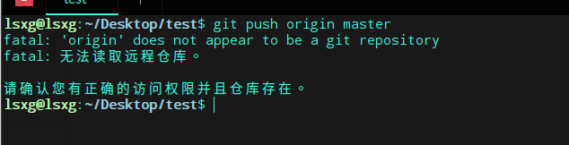
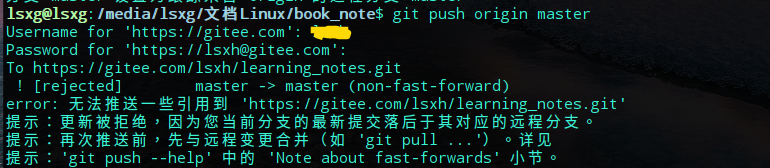

一个简单的演示（码云）
先在码云上创建一个项目
初始化git项目
git init
建立git分支
分支名：origin(自取) url:在码云上创建的项目url
git remote add origin url
把本地文件加到git仓库
git add .
加commit信息
git commit -m "info"
推送
git push origin master
注意:如果你使用了git init然后又使用git clone url提交的时候会提示仓库不可用
(使用git init 命令后会在当前目录下创建一个 .git 文件，再使用git clone url 会在当前目录下新建一个含有 .git 的文件夹，所以相当于使用git init创建的 .git 没有仓库)

注意:如果直接push也可能报错，你就要先pull一下，解除冲突，再强行push

git pull origin master
git push -u origin master